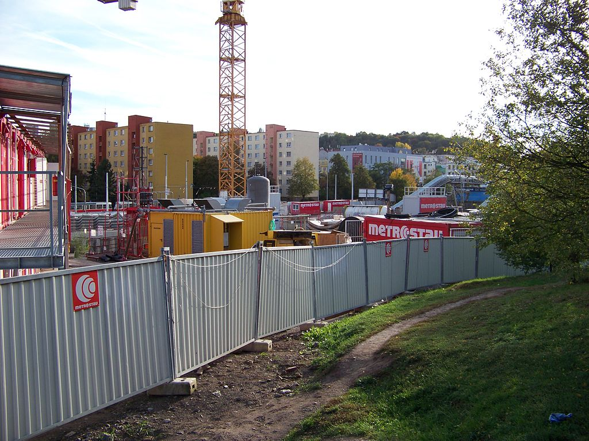

obsah čísla | následující článek »
Pražské hlavní nádraží prošlo rekonstrukcí. Nutno řici, že při ní celkem prokouklo a zcivilizovalo se.
A v jednu dobu se v něm na místech zatím nepronajatých prodejen objevila reklama (zřejmě na samotné nádraží) – srovnávací fotky „před“ a „po“ rekonstrukci. Každá z nich byla uvozená nějakým chytlavým sloganem, zřejmě aby si cestující více vážili rekonstruované podoby nádraží.
U jedné jsem se zarazil, bylo tam napsáno něco jako „od zmatečného značení k přehlednému informačnímu systému“, nalevo fotka překližkou zavřeného podchodu a napravo novotou se lesknoucí odjezdová tabule. Háček byl v tom, že ta fotka nalevo nebyla „před“, ale „při“ rekonstrukci.
Srovnávali nesrovnatelné! Každý, kdo někdy procházel rekonstrukcí, mi jistě potvrdí, jaký je to zážitek – objížďky, překližky bránící v cestě, hluk, prach a uzávěry. Ale jinak to nejde, stavba je stavba. Posuňme se dál.
Onehdá jsem se na internetu prokliknul na jednu výstavu fotografií. Byly to fotografie ukazující tu dobu, kterou si nepamatuji, tu dobu, kterou jsem nezažil, a tudíž ji nemohu zapomenout, tu dobu před rokem '89. Byly tam věci, které by člověk čekal – prvomájové průvody, vojenské přehlídky na Letné a pionýři. Pak tam byly běžné snímky z běžného života. Ke každému snímku byl vysvětlující komentář pro nás neznalé a nepamatující se.
U jednoho snímku jsem se zarazil. Byla na něm jakási ohrada na kraji ulice, evidentně součást nějaké větší stavby. Komentář k tomu poznamenával, že nikdy nekončící ohrady byly typické pro tu dobu, pořád se stavělo a výsledek nikde.
No a co? Řekl jsem si z pozice člověka, který se zajímá o dopravní stavby. Kolik se jen v tom období postavilo staveb? Vemte si třeba jen metro. Kolik takových ohrad způsobilo metro? No jistě mnoho.
Posuňme se dál. Doba nedávná, pražská Letná je celá rozkopaná. Staví se tunel Blanka. Všude ohrady a na nich slogan „Blíž Pražanům“, který internetoví cynici celkem vtipně přeložili na „Ubliž Pražanům“.
Počkat? Nikdy nekončící ohrady jsou typické i pro naší dobu? Pořád se staví a výsledek nikde? Cože?
Co z toho plyne za poučení? Pokud vám někdo bude argumentovat ohradou, zajímejte se, co je za ní. Může to být cokoliv – opravovaný podchod, nová stanice metra nebo tunel Blanka. Samotná ohrada není podstatná, slouží jen k tomu, aby lidé nelezli na staveniště. Posuňme se dál.
